unkai
Concept
柔らかな光を受けて輝く草木の朝露に時を忘れて見入ってしまう− "Unkai"はそのような体験を日々の生活の中で生み出すプロダクトです。忙しい日々に追われて余裕を失いがちな私たちと、ありのままの自然の姿からかけ離れてしまった観葉植物の関係性を見つめ直す中で、 "Unkai" のコンセプトは生まれました。


Design
特徴的な幅広いフレーム形状は、雲海に浮かぶ山々のような雄大な風景をみたてたデザインです。悠久の自然の美を尊び、その世界観を日本画や日本庭園などの芸術作品として表現するために先人が生み出してきた手法を、現代的な解釈のもとで再構成しました。

Technology
“Unkai”は汎用コンピュータであるRaspberry piと、各種センサ・LED照明・ミスト装置を備えており、水分量や光量などの周辺環境を自律的に最適化します。そのため、ユーザーは煩わしさを感じることなく植物を日常生活に取り入れることができます。